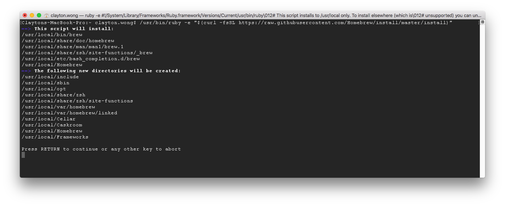
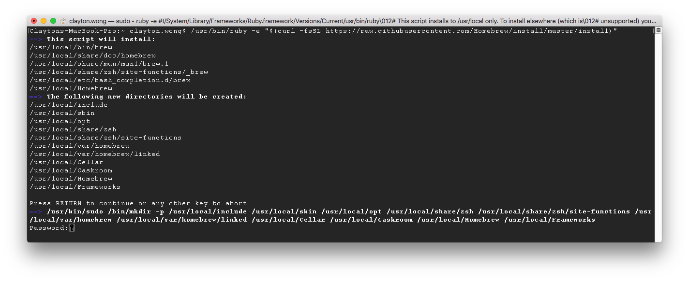
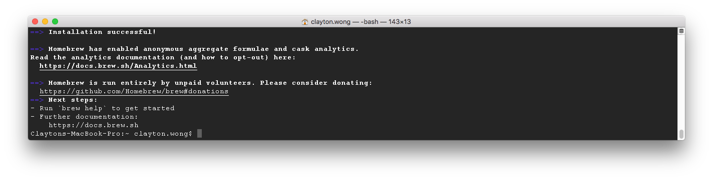
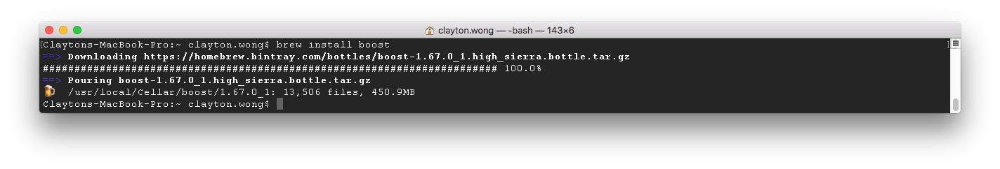
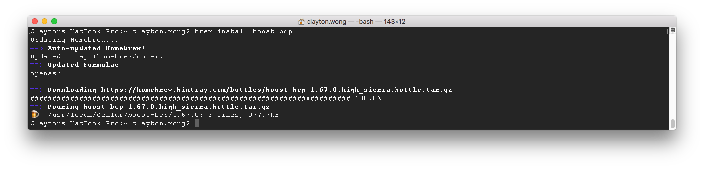
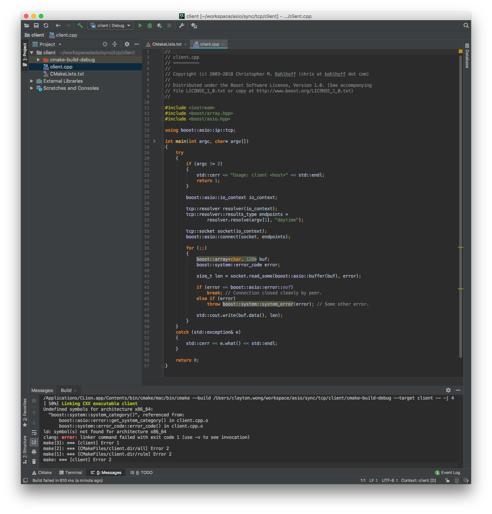
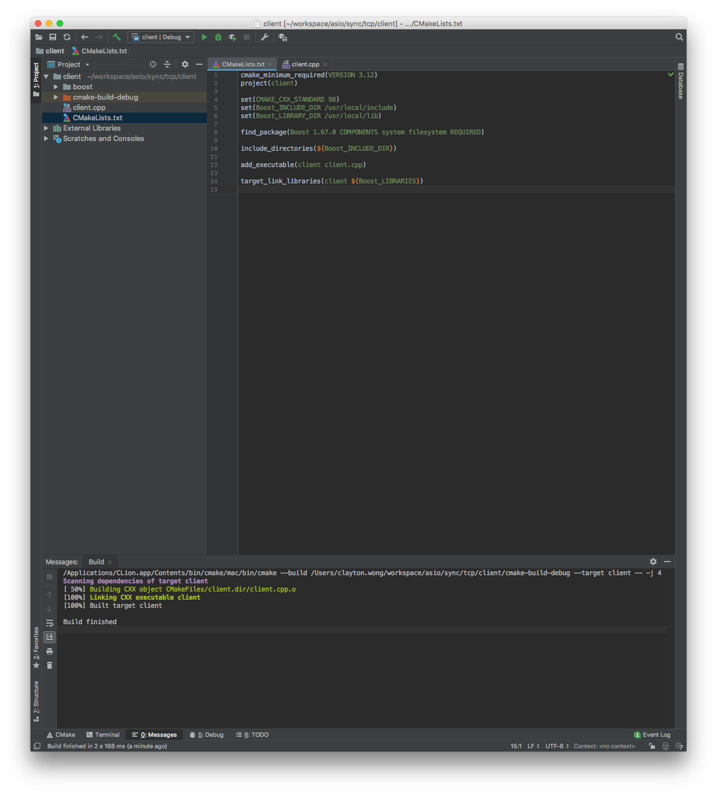

Open terminal and enter the following command to install Homebrew:
/usr/bin/ruby -e "$(curl -fsSL https://raw.githubusercontent.com/Homebrew/install/master/install)"

Press the RETURN key and enter your sudo password: ( Note: homebrew requires privledged administrative access for installation )

Note: Git repositories will be cloned and a "Installation successful!" message is displayed once installation is completed successfully:

Enter the following command to install Boost:
brew install boost

Enter the following command to install BCP:
brew install boost-bcp

Create a project in your favorite IDE. I've choosen to use CLion. Copy and paste the TCP client code from the Boost.Asio tutorial into a file named client.cpp. Observe the compilation failure due to missing Boost dependencies:

Open terminal and type the following command to go to the local include directory ( this is the directory where Boost is installed ):
cd /usr/local/include
ls
Type in the following command to pull in boost/array.hpp and its dependencies ( Note: modify the second parameter /Users/clayton.wong/workspace/asio/sync/tcp/client, to be the directory of the project previously created in your favorite IDE with client.cpp ):
bcp boost/array.hpp /Users/clayton.wong/workspace/asio/sync/tcp/client
Type in the following command to pull in boost/asio.hpp and its dependencies ( Note: modify the second parameter /Users/clayton.wong/workspace/asio/sync/tcp/client, to be the directory of the project previously created in your favorite IDE with client.cpp ):
bcp boost/asio.hpp /Users/clayton.wong/workspace/asio/sync/tcp/client
Modify the build settings within your favorite IDE to include Boost header files and libraries. Ensure the Boost include directories are are included and the Boost libraries are linked to the compilation target. I'm using CMake. The contents of my CMakeLists.txt file are as follows ( Note: now client.cpp successfully compiles and links to the boost libraries ):
cmake_minimum_required(VERSION 3.12)
project(client)
set(CMAKE_CXX_STANDARD 98)
set(Boost_INCLUDE_DIR /usr/local/include)
set(Boost_LIBRARY_DIR /usr/local/lib)
find_package(Boost 1.67.0 COMPONENTS system filesystem REQUIRED)
include_directories(${Boost_INCLUDE_DIR})
add_executable(client client.cpp)
target_link_libraries(client ${Boost_LIBRARIES})

I bought the following book from Amazon, and I found it very helpful to learn more about Boost.Asio C++ network programming: